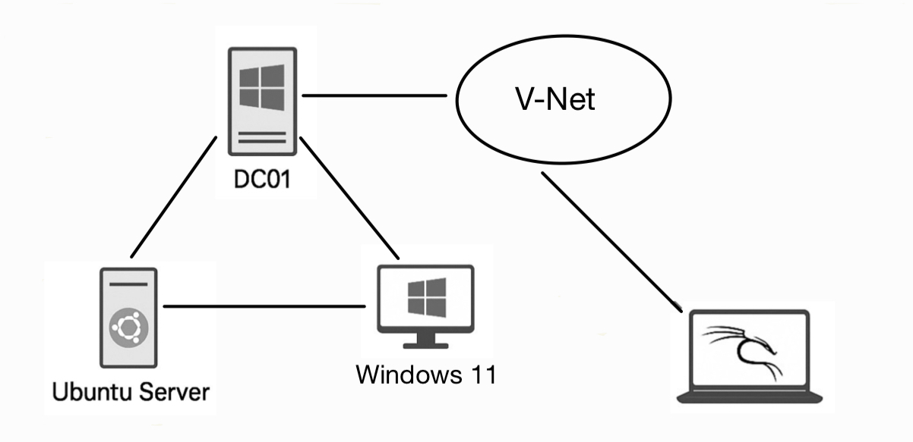

Cybersecurity Home Lab
A virtualized enterprise-style lab built in Azure to simulate real-world attack and defense scenarios.
What It Is
This project is a custom-built cybersecurity home lab designed to replicate a real-world IT environment for hands-on practice with both offensive (red team) and defensive (blue team) security tasks. The lab includes:
- Windows Server 2022 Domain Controller (Active Directory, GPOs, user/group management)
- Windows 11 Client workstation joined to the domain
- Ubuntu Server for blue team monitoring and log analysis
- Red team attacker VM (Ubuntu/Kali Linux) for penetration testing exercises
- Centralized logging and monitoring with Splunk
The environment is designed to simulate corporate network operations and security monitoring workflows.
Why I Built It
I created this home lab to:
- Gain hands-on experience with Active Directory, Group Policies, and enterprise-like setups
- Practice real-world red vs. blue team exercises
- Learn how to set up intrusion detection and log management using tools like Snort and Splunk
- Simulate and analyze cyberattacks in a safe environment
- Enhance my cybersecurity portfolio with practical, demonstrable skills
This lab helps me bridge the gap between theory and real-world security operations.
How I Built It
Technologies and tools used:
- Microsoft Azure for hosting virtual machines and networks
- Windows Server 2022 + Active Directory for domain control
- Windows 11 as the primary user workstation
- Ubuntu Server with Splunk, Snort v2, Auditd, Rsyslog, and Wireshark
- Kali Linux/Ubuntu as the red team attack machine
Workflow Overview:
- Set up a virtual network (cyberlab-vnet) in Azure
- Deployed and configured Windows Server 2022 as a domain controller with users and groups
- Joined the Windows 11 client to the domain and applied Group Policies
- Installed and configured Splunk Universal Forwarders to forward logs to the Ubuntu blue team server
- Configured Snort for intrusion detection and Wireshark for network traffic analysis
- Created red team attack scenarios from the Kali/Ubuntu attacker VM
Labs Conducted in the Home Lab
Goal: Test password hash strength and audit logging capabilities in the Windows domain environment.
Tools Used: John the Ripper, Auditd, Event Viewer, rockyou.txt
Summary: Extracted NT hashes from the domain controller, launched a dictionary attack, and monitored authentication attempts through Splunk and audit logs.
Outcome: Successfully cracked weak passwords and documented policy improvement suggestions.